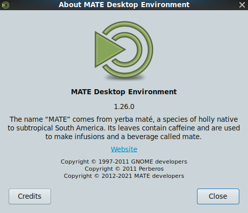

MATE 1.26 released
Diese Veröffentlichung mag vielleicht etwas länger als gewöhnlich auf sich warten lassen haben, aber jetzt nach 18 Monaten Entwicklung sind wir sehr erfreut, MATE 1.26 freigeben zu können. Vielen Dank an alle Beitragenden, die bei der Realisierung geholfen haben.

Was ist neu in MATE 1.26
Die Thematik dieser Veröffentlichung war es, neue Funktionen zum MATE Desktop hinzuzufügen und zugleich das Aussehen und die Handhabung, welche wir alle kennen und lieben beizubehalten. Während all die neuen Funktionen sicher ziemlich aufregend sind, haben wir auch das Beheben einer Menge von Fehlern, die Modernisierung der Codebasis und die Optimierung der Leistung nicht vergessen.
Die bedeutsamsten Veränderungen in MATE 1.26 sind:
- Wir haben die Unterstützung von Wayland zu Atril, Systemmonitor, Pluma, Terminal und anderen Komponenten des Desktops hinzugefügt. Desweiteren können Taschenrechner und Terminal jetzt auch mit Meson gebaut werden.
-
Pluma wurde massiv verbessert.
- Eine neue Miniatur-Karte ermöglicht einen sofortigen Überblick über den Inhalt
- Das neue Raster-Hintergrundmuster verwandelt Pluma in einen Schreibblock.
- Das Sortieren-Plugin unterstützt jetzt Rückgängig-Funktionen
- Wir haben einen neuen Kurzbefehl zum Zeigen/Verstecken von Zeilennummern hinzugefügt: Strg + Y.
- Der Einstellungsdialog benötigte eine Neugestaltung, um mit all den neuen Funktionen umgehen zu können.
- Mit den brandneuen Pluma-Plugins kann unser Texteditor in eine funktionsreiche IDE verwandelt werden, welche Bracket-Vervollständigung, Ein- und Auskommentieren von Code, ein eingebautes Terminal und Wortvervollständigung unterstützt.
- Das Kontrollzentrum beinhaltet einen verbesserten Einstellungsdialog für Fenster mit mehr Optionen. Im Bildschirm-Dialog haben wir eine Möglichkeit für Display-Skalierung hinzugefügt.
- Die Benachrichtigungen wurden noch nützlicher, da sie jetzt auch Hyperlinks unterstützen. Außerdem haben wir endlich ein Nicht-Stören-Applet hinzugefügt.
- Apropos Applets, das Fensterlisten-Applet hat eine neue Option um Maus-Scrolling zu deaktivieren. Die optionalen Fenster-Vorschaubilder sind jetzt kristallklar, da sie über Cairo-Oberflächen gerendert werden.
- Das Applet zur Überwachung der Netzwerkgeschwindigkeit zeigt standardmäßig mehr Informationen und erhielt Unterstützung für netlink.
- Der Taschenrechner wurde zur GNU MPFR-/MPC-Bibliothek portiert, was sich in präziserer und schnellerer Berechnung und zusätzlichen Funktionen (z.B. Riemann-zeta-Funktion, Gauss-Fehler-Funktion) niederschlägt.
- Wir haben endlich eine Funktion zum Anzeigen kürzlicher Berechnungen hinzugefügt.
- Die Größe des Taschenrechners kann jetzt angepasst werden, wenn die Chronik aktiviert ist.
- Gewaltige Geschwindigkeits-Verbesserung bei der Zerlegung in integer-Faktoren.
- Viel schnellere modulare arithmetische Evaluation (modulare Potenzierungs-Fähigkeit).
- In der Dateiverwaltung Caja kann eine neue Lesezeichen-Seitenleiste ausgewählt werden. Caja erhielt außerdem Unterstützung zum Formatieren von Platten aus dem Kontextmenü heraus. Die Caja-Aktionen-Erweiterung, welche das Hinzufügen beliebiger Programme zum Aufrufen über das Kontextmenü erlaubt, ist jetzt Teil des Desktops.
- Das Scrollen durch große Dokumente in Atril ist jetzt um einiges schneller, da eine langsame lineare Suche durch eine binary-tree-Suche ersetzt wurde. Der Ressourcenverbrauch des Dokumentenbetrachters wurde noch geringer, da eine EvWebView jetzt nur noch wenn nötig erstellt wird.
- Die Fensterverwaltung Marco stellt Fenster jetzt zuverlässiger an ihrer originalen Position her.
- Engrampa erhielt Unterstützung für Electronic Publication (EPUB)- und ARC-Archive. Außerdem können jetzt RAR-verschlüsselte Archive geöffnet werden.
- Die Energieverwaltung hat eine neue Option zur Freischaltung des Dimmens der Tastatur und wurde zu libsecret portiert.
- Die meisten Über-Dialoge wurde mit besseren Beschreibungen aktualisiert. Weil auch Kleinigkeiten zählen
:-). - Wir haben eine Reihe von Fehlern und memory-leaks behoben sowie die Codebasis von fast allen Bestandteilen des Desktops modernisiert.
- Über ein neues Wiki wird neuen Beitragenden der Einstieg in das Projekt erleichtert. Wir brauchen dringend motivierte Leute, zögere also nicht uns zu kontaktieren oder anzufangen beizutragen.
- Die Übersetzungen sind aktualisiert worden. Danke an unser Übersetzungsteam.
Die verschiedenen Komponenten des MATE Desktops 1.26 können hier heruntergeladen werden:
Nähere Informationen
Hier sind die blutigen Details.
atril
- Vollkommen neu verfasste Hilfe (gehen Sie sicher, den neuen synctex-Abschnitt zu besuchen, falls Sie eine Menge TeX-Dateien schreiben)
- ev-window.c: Erstelle eine EvWebView nur wenn nötig
- ev-sidebar-links: Optimierung des Rückwärts-Link-Nachschlagens für eine Seite (die sehr langsame lineare Suche wurde durch eine spezialisierte binary-tree-Suche ersetzt)
- Hinzufügen von Wayland-Unterstützung
- Sicherstellen, dass das Zubehör-Fenster die vollständige Seitenleiste ausfüllt
- synctex ist optional
- segfault in leerer navMap behoben
- Einige code-analysis-Warnungen vor veralteten Versionen, die Clang Static Analyzer, Cppcheck und GCC gemeldet haben, wurden behoben
- build: Option zum Abschalten von Native Language Support (NLS) (
--disable-nls) hinzugefügt - g10n: Aktualisierte Übersetzungen
Vollständiger Changelog unter https://github.com/mate-desktop/atril/commits/master/
caja
- Informationen zur Erstellungszeit können jetzt in Listenspalten hinzugefügt werden
- Einstellungsmöglichkeit zum Blockieren festgeschriebener Symbolpositionen auf dem Schreibtisch hinzugefügt
- Verbesserte Überprüfung des Dateisystems bei Drag-and-Drop
- Platten können jetzt in Caja formatiert werden
- fm-properties-window: der Ort von Systemverzeichnissen ist jetzt optional
- Ein Mittelklick auf den Neu-laden-Knopf dupliziert den Reiter
- Links werden standardmäßig unter dnd aus Web Browsern erstellt
- “Lesezeichen”-Seitenleiste zu Caja hinzugefügt
- Unterstützung für eine explizite
--select-Befehlszeilenoption - Bestätigung vor Löschen während einer Rückgängig-Operation
- Einige code-analysis-Warnungen vor veralteten Versionen, die Clang Static Analyzer, Cppcheck und GCC gemeldet haben, wurden behoben
- Einige memory-leaks wurden behoben
- build: Option zum Abschalten von Native Language Support (NLS) (
--disable-nls) hinzugefügt - g10n: Aktualisierte Übersetzungen
Vollständiger Changelog unter https://github.com/mate-desktop/caja/commits/master/
caja-actions
- Taucht zum ersten mal in dieser Veröffentlichung auf
- i18n: Migration von intltools zu gettext
- Einige code-analysis-Warnungen vor veralteten Versionen, die Clang Static Analyzer, Cppcheck und GCC gemeldet haben, wurden behoben
- g10n: Aktualisierte Übersetzungen
caja-dropbox
- i18n-Unterstützung hinzugefügt
- g10n: Aktualisierte Übersetzungen
Vollständiger Changelog unter https://github.com/mate-desktop/caja-dropbox/commits/master/
caja-extensions
- gksu: Befehl nicht in einem neuen Thread ausführen
- gtk+ 3.22 in glade-Dateien erforderlich
- sendto: Evolution-Kommando zum Versenden einer E-Mail repariert
- image-converter: caja-image-rotate.ui von Grund auf neu geschrieben
- Einige memory-leaks wurden behoben
- build: Option zum Abschalten von Native Language Support (NLS) (
--disable-nls) hinzugefügt - g10n: Aktualisierte Übersetzungen
Vollständiger Changelog unter https://github.com/mate-desktop/caja-extensions/commits/master/
engrampa
- rar 6.00: Auflistung von Archiv-Inhalten mit verschlüsselter Dateiliste repariert
- Untersützung für Electronic Publication (EPUB) hinzugefügt
- Unterstützung für ARC-Archive hinzugefügt
- Einige code-analysis-Warnungen vor veralteten Versionen, die Clang Static Analyzer, Cppcheck und GCC gemeldet haben, wurden behoben
- Einige memory-leaks wurden behoben
- build: Option zum Abschalten von Native Language Support (NLS) (
--disable-nls) hinzugefügt - g10n: Aktualisierte Übersetzungen
Vollständiger Changelog unter https://github.com/mate-desktop/engrampa/commits/master/
eom
- UI-Dateien aktualisiert
- Bewegung der Scrollbar wurde sichergestellt, sollte diese zur Bewegung eines Bildes gezogen werden
- Unterstützung für Scrollen von Reitern zu Dialogfenstern hinzugefügt
- Einige code-analysis-Warnungen vor veralteten Versionen, die Clang Static Analyzer, Cppcheck und GCC gemeldet haben, wurden behoben
- build: Option zum Abschalten von Native Language Support (NLS) (
--disable-nls) hinzugefügt - g10n: Aktualisierte Übersetzungen
Vollständiger Changelog unter https://github.com/mate-desktop/eom/commits/master/
libmatekdb
- Schriftgröße von Tastennamen in der Tastatur-Layout-Anzeige verringert
- g10n: Aktualisierte Übersetzungen
Vollständiger Changelog unter https://github.com/mate-desktop/libmatekbd/commits/master/
libmatemixer
- alsa: udev-Unterstützung hinzugefügt
- g10n: Aktualisierte Übersetzungen
Vollständiger Changelog unter https://github.com/mate-desktop/libmatemixer/commits/master/
libmateweather
- Berlin Tegel entfernt
- 2 brasilianische Städte hinzugefügt
- Städte in Thailand aktualisiert
- g10n: Aktualisierte Übersetzungen
Vollständiger Changelog unter https://github.com/mate-desktop/libmateweather/commits/master/
marco
- window: Unterstützung für _GNOME_WM_STRUT_AREA hinzugefügt
- screen: Unterstützung für _GTK_WORKAREAS_Dn hinzugefügt
- window: Schatten wird bei geteilten Fenstern nicht links/rechts gezeichnet
- iconcache: Benutzung von GDesktopAppInfo um korrekte Anwendungssymbole zu finden
- window: Verfolgung des Fenster-Rechtecks bevor es in die Ecke geteilt wird
- window: Verfolgung des Fenster-Rechtecks bevor es geteilt wird
- VI-Tasten (hjkl) zum Verschieben und zur Größenänderung von Fenstern hinzugefügt
- window: Unterstützung für das Durchlaufen von geteilten Fenstergrößen erweitert
- Ausgewählte Arbeitsfläche wird im Pop-up-Arbeitsflächenwechsler angezeigt
- Meson-Build-Script verbessert
- Einige code-analysis-Warnungen vor veralteten Versionen, die Clang Static Analyzer, Cppcheck und GCC gemeldet haben, wurden behoben
- g10n: Aktualisierte Übersetzungen
Vollständiger Changelog unter https://github.com/mate-desktop/marco/commits/master/
mate-applets
- netspeed: ausgesetzte Netzwerke können jetzt ausgewählt werden
- netspeed: im Detail-Dialog der Geräte werden alle ipv6-Adressen angezeigt
- netspeed: Alle IP-Adressen werden auf dem tooltip angezeigt, sollte das freigeschaltet werden
- multiload: Bit-Rate wird im netload-Graphen verwendet
- multiload: Erhöhung der Auffrischungsratenweiten-Einstellung
- battstat: Einstellungsdialog von Grund auf neu geschrieben
- multiload: akkurate Anzeige des genutzten Prozentsatzes auf dem tooltip
- netspeed: Benutzung von IEC-Einheiten für Transfer-Raten
- netspeed: netlink-Unterstützung hinzugefügt
- Einige code-analysis-Warnungen vor veralteten Versionen, die Clang Static Analyzer, Cppcheck und GCC gemeldet haben, wurden behoben
- Einige memory-leaks wurden behoben
- g10n: Aktualisierte Übersetzungen
Vollständiger Changelog unter https://github.com/mate-desktop/mate-applets/commits/master/
mate-backgrounds
- Neues ‘Something slowly gets clear’ elephants-Hintergrundbild
- g10n: Aktualisierte Übersetzungen
Vollständiger Changelog unter https://github.com/mate-desktop/mate-backgrounds/commits/master/
mate-calc
- Portierung zur GNU MPFR/MPC-Bibliothek
- Optionale Chronik zur Anzeige kürzlich durchgeführter Berechnungen
- Tastenkürzel (Alt+Hoch)/(Alt+Runter) zur Navigation durch die Chronik
- Taschenrechner ist in der Größe veränderbar, wenn die Chronik aktiviert sein sollte
- Anzeige der Exponenten in primärer Faktorisierung
- Wesentliche Verbesserung der Geschwindigkeit primärer Faktorisierungen
- Zur Faktorisierung von integern größer als 2^64 werden der Miller-Rabin Primaritätstest und Pollards rho-Alghorithmus verwendet
- Viel schnellere modulare arithmetische Evaluation (modulare Potenzierungs-Fähigkeit).
- Riemann-zeta-Funktion, Gauss-Fehlfunktion, Fakultätsfunktion für reelle Zahlen hinzugefügt
- Unterstützung für Meson-Build hinzugefügt
- Einige code-analysis-Warnungen vor veralteten Versionen, die Clang Static Analyzer, Cppcheck und GCC gemeldet haben, wurden behoben
- Einige memory-leaks wurden behoben
- g10n: Aktualisierte Übersetzungen
Vollständiger Changelog unter https://github.com/mate-desktop/mate-calc/commits/master/
mate-common
- g10n: Aktualisierte Übersetzungen
Vollständiger Changelog unter https://github.com/mate-desktop/mate-common/commits/master/
mate-control-center
- windows-applet: Fensterumrisse werden jetzt in der Alt-Tab-Ansicht angezeigt. Außerdem können Fenster optional nach oben geteilt werden (Window-Snapping)
- windows-applet: Neuer Reiter für Komposit-Verwaltung
- windows-applet: Neue Titelleisten-Layoutoptionen “links (mit Menü)” und “rechts” (ohne Menü)
- Fenster mit Client-Side-Decorations respektieren jetzt das Layout der Titelleiste.
- Vorschau repariert und Hintergrundbild-Dialog eingeführt
- Option zum Wählen von Dateien in den Reiter zur Anpassung der Steuerelemente des Erscheinungsbild-Dialogs eingefügt (das Fenster zum Wählen einer Datei öffnet sich, wenn eine Datei geöffnet oder gespeichert wird)
- Migration einiger Komponenten von dbus-glib zu GDBus
- Unterstützung für Tab-Scrolling im Fenster- und Erscheinungsbild-Dialog
- Das Bildschirm-Applet hat eine Option zur Skalierung des Bildes erhalten
- build: Option zum Abschalten von Native Language Support (NLS) (
--disable-nls) hinzugefügt - Einige code-analysis-Warnungen vor veralteten Versionen, die Clang Static Analyzer, Cppcheck und GCC gemeldet haben, wurden behoben
- Einige memory-leaks wurden behoben
- g10n: Aktualisierte Übersetzungen
Vollständiger Changelog unter https://github.com/mate-desktop/mate-control-center/commits/master/
mate-desktop
- a11y-keyboard: capslock-beep-enable gsetting hinzugefügt
- Breite für das maximale Alter des Caches an Vorschaubildern festgesetzt
- GTimeVal-Veraltungswarnung vor GLib 2.61.2+ entfernt
- Einige code-analysis-Warnungen vor veralteten Versionen, die Clang Static Analyzer, Cppcheck und GCC gemeldet haben, wurden behoben
- g10n: Aktualisierte Übersetzungen
Vollständiger Changelog unter https://github.com/mate-desktop/mate-desktop/commits/master/
mate-icon-theme
- Entfernung des execution-bit von einigen png-Dateien
- g10n: Aktualisierte Übersetzungen
Vollständiger Changelog unter https://github.com/mate-desktop/mate-icon-theme/commits/master/
mate-indicator-applet
- applet-main: GtkStock-Symbol ersetzt
- g10n: Aktualisierte Übersetzungen
Vollständiger Changelog unter https://github.com/mate-desktop/mate-indicator-applet/commits/master/
mate-media
- Ersetzung des stumm/nicht stumm-checkmenuitem mit imagemenuitem
- panel-applet: Sicherstellen, dass Lautsprecher neben oder über Mikrophon gezeigt werden kann
- Einige code-analysis-Warnungen vor veralteten Versionen, die Clang Static Analyzer, Cppcheck und GCC gemeldet haben, wurden behoben
- g10n: Aktualisierte Übersetzungen
Vollständiger Changelog unter https://github.com/mate-desktop/mate-media/commits/master/
mate-menus
- Sammlung-Menüeintrag hinzugefügt
- build: Option zum Abschalten von Native Language Support (NLS) (
--disable-nls) hinzugefügt - g10n: Aktualisierte Übersetzungen
Vollständiger Changelog unter https://github.com/mate-desktop/mate-menus/commits/master/
mate-netbook
- mate-window: GtkStock-Symbol ersetzt
- mate-maximus-autostart.desktop: Entfernung der veralteten Encoding-Taste
- g10n: Aktualisierte Übersetzungen
Vollständiger Changelog unter https://github.com/mate-desktop/mate-netbook/commits/master/
mate-notification-daemon
- Nicht-Stören-Applet hinzugefügt
- Initiales Wayland-Backend hinzugefügt
- Unterstützung von Hyperlinks zum Hauptteil von Benachrichtigungen hinzugefügt
- mate-notification-daemon-properties.ui von Grund auf neu geschrieben
- Einige code-analysis-Warnungen vor veralteten Versionen, die Clang Static Analyzer, Cppcheck und GCC gemeldet haben, wurden behoben
- Einige memory-leaks wurden behoben
- build: Option zum Abschalten von Native Language Support (NLS) (
--disable-nls) hinzugefügt - g10n: Aktualisierte Übersetzungen
Vollständiger Changelog unter https://github.com/mate-desktop/mate-notification-daemon/commits/master/
mate-panel
- workspace-switcher: Untersützung für den xmonad-Fenstermanager
- Die Liste der kürzlich verwendeten Dokumente unter Orte kann jetzt in ihrer Länge angepasst werden
- Option zum Abschalten von Mausscrolling bei der Fensterliste
- Unterstützung für Anzeige von Textkennzeichen zum Benachrichtigungsfeld hinzugefügt
- window-list: Rendern von Vorschaubildern als Cairo-Oberflächen
- Hintergrundbild-Komposit wird in der Entwicklung fallen gelassen
- Wayland-Unterstützung der Fensterliste
- Neugestaltung des Einstellungsdialogs für das Fensterlisten-Applet
- Hinzufügen von Startern zur Leiste über den Als-Starter-zur-Leiste-hinzufügen-Dialog repariert
- Einige code-analysis-Warnungen vor veralteten Versionen, die Clang Static Analyzer, Cppcheck und GCC gemeldet haben, wurden behoben
- Einige memory-leaks wurden behoben
- g10n: Aktualisierte Übersetzungen
Vollständiger Changelog unter https://github.com/mate-desktop/mate-panel/commits/master/
mate-polkit
- g10n: Aktualisierte Übersetzungen
Vollständiger Changelog unter https://github.com/mate-desktop/mate-polkit/commits/master/
mate-power-manager
- mate-power-preferences: Option zum Freischalten des Dimmens der Tastatur
- Wechsel des Standards von libgnome-keyring zu libsecret
- brightness applet: Beim Schieben davor schützen, dass sich die Benutzeroberfläche festfährt
- Portierung von EggDebug zum eingebauten GLib-logging-framework
- gpm-pres.ui von Grund auf neu geschrieben
- CPU-wakeups-Funktion entfernt
- Einige fehlende SVG-Dateien hinzugefügt
- Einige code-analysis-Warnungen vor veralteten Versionen, die Clang Static Analyzer, Cppcheck und GCC gemeldet haben, wurden behoben
- Einige memory-leaks wurden behoben
- g10n: Aktualisierte Übersetzungen
Vollständiger Changelog unter https://github.com/mate-desktop/mate-power-manager/commits/master/
mate-screen-saver
- Wechsel der Formate von Zeit und Datum beim Sperren erlaubt
- Zeige/Verstecke-Passwort-Emblem zum Passworteintrag hinzugefügt
- mate-screensaver-preferences: Sperrbildvorschau im Datei-Auswahldialog anzeigen
- Einige code-analysis-Warnungen vor veralteten Versionen, die Clang Static Analyzer, Cppcheck und GCC gemeldet haben, wurden behoben
- Einige memory-leaks wurden behoben
- g10n: Aktualisierte Übersetzungen
Vollständiger Changelog unter https://github.com/mate-desktop/mate-screensaver/commits/master/
mate-sensors-applet
- aticonfig-Plugin wurde in der Entwicklung fallen gelassen
- sonypi-plugin.c: sonypi-Plugin ist jetzt portabel nach GNU/Hurd
- libsensors-plugin: Portierung zu GRegex
- g10n: Aktualisierte Übersetzungen
Vollständiger Changelog unter https://github.com/mate-desktop/mate-sensors-applet/commits/master/
mate-session-manager
- Befolgen der freedesktop-Standards zur Abschaltung von autorun über die Hidden-Taste
- Unterstützung für xscreensaver, sollte mate-screensaver nicht verfügbar sein
- Unterstützung für Tab-Scrolling für GTK3 hinzugefügt
- Desktop Entry Specification v1.1 akzeptiert
- Einige code-analysis-Warnungen vor veralteten Versionen, die Clang Static Analyzer, Cppcheck und GCC gemeldet haben, wurden behoben
- Einige memory leaks behoben
- build: Option zum Abschalten von Native Language Support (NLS) (
--disable-nls) hinzugefügt - g10n: Aktualisierte Übersetzungen
Vollständiger Changelog unter https://github.com/mate-desktop/mate-session-manager/commits/master/
mate-settings-daemon
- xsettings: Verbesserung der Qt-HiDPI-Umgebungseinstellungen
- a11y-keyboard: Unterstützung für togglekeys-backend-Einstellung hinzugefügt
- Option —without-libatspi und sortierte status line hinzugefügt
- a11y-keyboard: Untersützung zum Läuten der Glocke wenn CapsLock aktiv ist
- Einige code-analysis-Warnungen vor veralteten Versionen, die Clang Static Analyzer, Cppcheck und GCC gemeldet haben, wurden behoben
- Zwei memory-leaks behoben
- g10n: Aktualisierte Übersetzungen
Vollständiger Changelog unter https://github.com/mate-desktop/mate-settings-daemon/commits/master/
mate-system-monitor
- Wayland-Unterstützung hinzugefügt
- Portierung zu GtkApplication
- pretty-table: GIO bevorzugen, um Anwendungssymbole zu bekommen
- Unterstützung für Aktionen auf mehreren Prozessen hinzugefügt
- Einige code-analysis-Warnungen vor veralteten Versionen, die Clang Static Analyzer, Cppcheck und GCC gemeldet haben, wurden behoben
- g10n: Aktualisierte Übersetzungen
Vollständiger Changelog unter https://github.com/mate-desktop/mate-system-monitor/commits/master/
mate-terminal
- Desktop-file-Validierungswarnung repariert
- Meson-Build-System hinzugefügt
- Unterstützung für Tab-Scrolling für GTK3 hinzugefügt
- Wayland-Unterstützung hinzugefügt
- Suchen im Terminalfenster repariert
- Symbole zu “Reiter öffnen” und “Fenster/Reiter schließen” hinzugefügt
- Absturz bei bad-term-spawn wegen redundanter Freigaben
- Einige code-analysis-Warnungen vor veralteten Versionen, die Clang Static Analyzer, Cppcheck und GCC gemeldet haben, wurden behoben
- g10n: Aktualisierte Übersetzungen
Vollständiger Changelog unter https://github.com/mate-desktop/mate-terminal/commits/master/
mate-user-guide
- Entfernung des execution-bit von einigen italienischen Schaubildern
- build: Option zum Abschalten von Native Language Support (NLS) (
--disable-nls) hinzugefügt - g10n: Aktualisierte Übersetzungen
Vollständiger Changelog unter https://github.com/mate-desktop/mate-user-guide/commits/master/
mate-user-share
- Nutzung von MATE_COMPILE_WARNINGS aus mate-common
- g10n: Aktualisierte Übersetzungen
Vollständiger Changelog unter https://github.com/mate-desktop/mate-user-share/commits/master/
mate-utils
- mate-screenshot: Reihenfolge der unteren Knöpfe rapariert
- mate-screenshot: keine Stock-Symbole in mate-screenshot.ui nutzen
- logview: logview-filter.ui von Grund auf neu geschrieben
- gsearchtool: Pfad kopieren-Menüeintrag zum Aufklappmenü hinzugefügt
- Einige code-analysis-Warnungen vor veralteten Versionen, die Clang Static Analyzer, Cppcheck und GCC gemeldet haben, wurden behoben
- build: Option zum Abschalten von Native Language Support (NLS) (
--disable-nls) hinzugefügt - g10n: Aktualisierte Übersetzungen
Vollständiger Changelog unter https://github.com/mate-desktop/mate-utils/commits/master/
mozo
- mozo.ui von Grund auf neu geschrieben
- Seltsames Verhalten beim Editieren des Sammlungsverzeichnisses behoben
- g10n: Aktualisierte Übersetzungen
Vollständiger Changelog unter https://github.com/mate-desktop/mozo/commits/master/
pluma
- Portierung des Anordnungs-Plugins zur neuen GtkSourceView-API.
- Plugins zur Nutzung der window-construct property portiert.
- build: Portierung zu gtksourceview-4
- PlumaWindowActivatable, PlumaAppActivatable, PlumaViewActivatable eingeführt
- Zeilennummern zeigen-/verstecken-Tastenkürzel (Strg+Y)
- Neugestaltung des Pluma-Einstellungsdialogs
- pluma-marshal entfernt.
- optionales Kästchen-Hintergrundmuster hinzugefügt
- changecase-Plugin entfernt. Die Funktionalität wird von GtkSourceView bereitgestellt.
- Karte zum Überblick hinzugefügt
- Portierung zu einer neuen pluma-settings-Klasse
- Wayland-Unterstützung hinzugefügt
- Unterstützung für Tab-Scrolling für GTK3 hinzugefügt
- pluma.c: PlumaWindow Größen-Anfrage (minimale Größe) auf 250x250 gesetzt
- Einige code-analysis-Warnungen vor veralteten Versionen, die Clang Static Analyzer, Cppcheck und GCC gemeldet haben, wurden behoben
- g10n: Aktualisierte Übersetzungen
Vollständiger Changelog unter https://github.com/mate-desktop/pluma/commits/master/
pluma-plugins
- Taucht zum ersten mal in dieser Veröffentlichung auf
- Das Paket beinhaltet die folgenden zusätzlichen Plugins
- bookmarks - Einfache Dokumenten-Navigation mit Lesezeichen
- bracketcompletion - Automatisches Einfügen schließender Klammern.
- codecomment - Kommentieren und Auskommentieren von Blöcken von Code.
- smartspaces - Einfach mal vergessen, dass man keine Tabulatorzwischenräume nutzt.
- synctex - SyncTeX-Synchronisation von TeX-Dateien und PDF-Ausgabe.
- terminal - Terminal in unterem Ausschnitt einbetten.
- wordcompletion - Wortvervollständigung unter Benutzung des completition-framework.
- sourcecodebrowser - Funktionen, Variablen und Namespaces ansehen und navigieren.
python-caja
- Memory-leak behoben, der von scan-build gemeldet wurde
- g10n: Aktualisierte Übersetzungen
Vollständiger Changelog unter https://github.com/mate-desktop/python-caja/commits/master/